Package Version Citation
1 base 4.2.2 @base
2 correlation 0.8.4 @
3 easystats 0.6.0.8 @easystats
4 emo 0.0.0.9000 @emo
5 equatiomatic 0.3.1 @equatiomatic
6 flair 0.0.2 @flair
7 GGally 2.1.2 @GGally
8 gganimate 1.0.8 @gganimate
9 ggpmisc 0.5.0 @ggpmisc
10 ggstatsplot 0.9.4 @ggstatsplot
11 huxtable 5.5.0 @huxtable
12 kableExtra 1.3.4 @kableExtra
13 knitr 1.41 @knitr2014; @knitr2015; @knitr2022
14 pacman 0.5.1 @pacman
15 papaja 0.1.1.9001 @papaja
16 parameters 0.21.1.2 @parameters
17 patchwork 1.1.2 @patchwork
18 performance 0.10.4.1 @performance
19 ppcor 1.1 @ppcor
20 pwr 1.3.0 @pwr
21 report 0.5.7.9 @report
22 rmarkdown 2.14 @rmarkdown2018; @rmarkdown2020; @rmarkdown2022
23 see 0.8.0.2 @see
24 skimr 2.1.4 @skimr
25 tidyverse 1.3.2 @tidyverse
26 xaringan 0.26 @xaringan
27 xaringanExtra 0.7.0 @xaringanExtra
28 xaringanthemer 0.4.1 @xaringanthemerGLM I: Continuous/Numerical Predictors
Princeton University
Jason Geller, PH.D.(he/him)
2023-10-10
Packages
Overview
Intro to GLM/Regression analysis
Why regression?
How does it work?
Drawing lines
Error and more error
Regression analysis in R
Fitting and interpreting a simple model
Sums of squares
Model fit and \(R^2\)
Testing assumptions
Purposes of Regression
Prediction
Useful if we want to forecast the future
Focus is on predicting future values of \(Y\)
Netflix trying to guess your next show
Predicting who will enroll in SNAP
Explanation
Here we want to explain relationship of variables
Focus is on the effect of \(X\) on \(Y\)
- Estimating the effect of fluency on test performance
How does regression work?
Assume \(X\) and \(Y\) are both theoretically continuous quantities
- Make a scatter plot of the relationship between \(X\) and \(Y\)
Draw a line to approximate the relationship between \(X\) and \(Y\)
And that could plausibly work for data not in the sample
Find the mathy parts of the line and then interpret the math
Lines, Math, and Regression
Components of Regression
\[ {y_i} = \beta_0 + \beta_1{X_i} +{\varepsilon_i} \]
\[ {y_i} = b_0 + b_1{X_i} + e \]
What we’ve been referring to thus far as \({Y}\)
The outcome variable, response variable, or dependent variable
The outcome is the thing we are trying to explain or predict
What we’ve been referring to thus far as \({X}\)
The explanatory variables, predictor variables, or independent variables
- Explanatory variables are things we use to explain or predict variation in \(Y\)
Drawing Lines with Math
- Remember \(y = mx + b\) from high school algebra
\[ {y_i} = \beta_0 + \beta_1{X_i} +{\varepsilon_i} \]
\[ {y_i} = b_0 + b_1{X_i} + e \]
\(y_i\) is the expected response for the \(i^{th}\) observation
\(b_0\) is the intercept, typically the expected value of \(y\) when \(x = 0\)
\(b_1\) is the slope coefficient, the average increase in \(y\) for each one unit increase in \(x\)
\(e_i\) is a random noise term
Slopes and Intercepts
The intercept \(b_0\) captures the baseline value
- Point at which the regression line crosses the Y-axis
The slope \(b_1\) captures the rate of linear change in \(y\) as \(x\) increases
- Tells us how much we would expect y to change given a one-unit change in x
The Best Fit Line and Least Squares
Many lines could fit the data, but which is best?
- The best fitting line is one that produces the “least squares”, or minimizes the squared difference between X and Y
We use a method known as least squares to obtain estimates of \(b_0\) and \(b_1\)
Gauss-Markov and Linear Regression
The Gauss-Markov theorem states that if a series of assumptions hold, ordinary least squares is the the best linear unbiased estimator (BLUE)
Best : smallest variance
Linear : linear observed output variables
Unbiased: unbiased
Estimator
Error
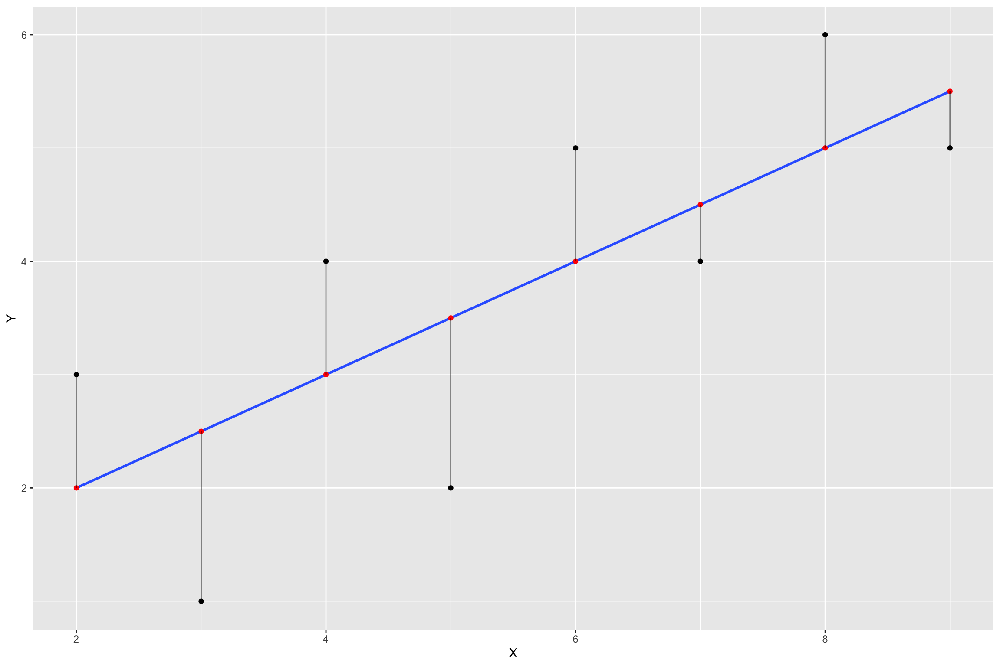Visualize Errors as Squares
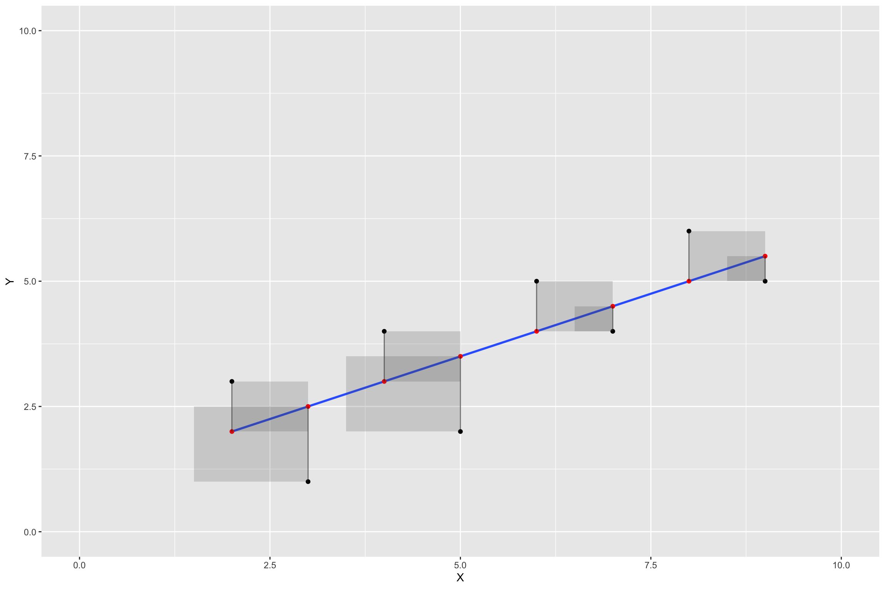Example
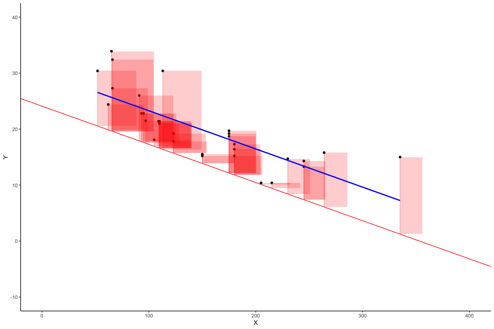
Shows two concepts:
Regression line is “best fit line”
The “best fit line” is the one that minimizes the sum of the squared deviations between each point and the line
Worse Fit Lines
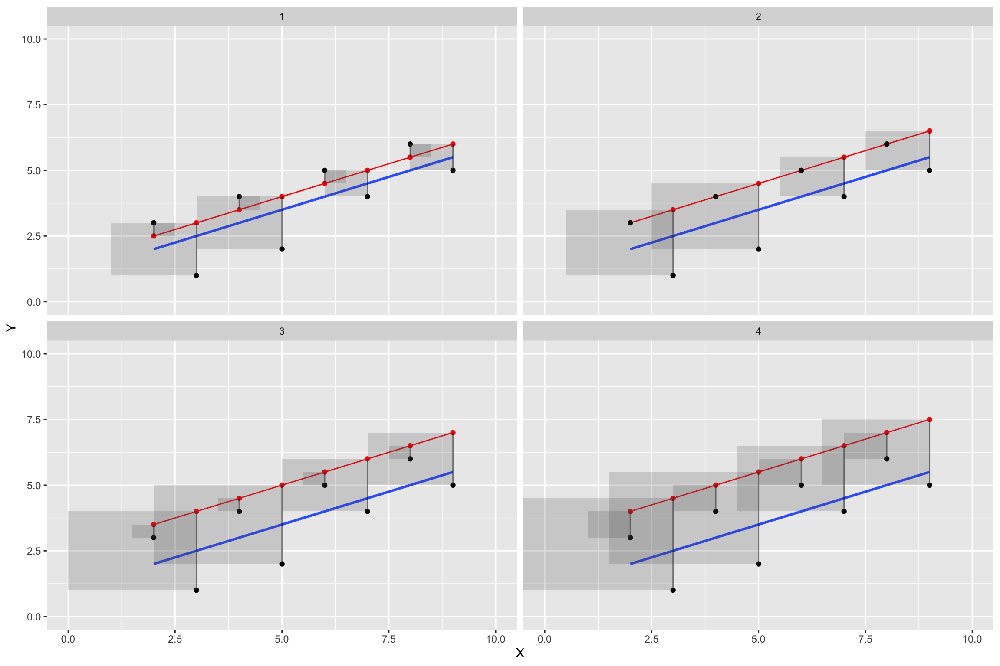Simple Regression Example
- Depression scores and meaningfulness (in one’s life)

Simple Regression Example
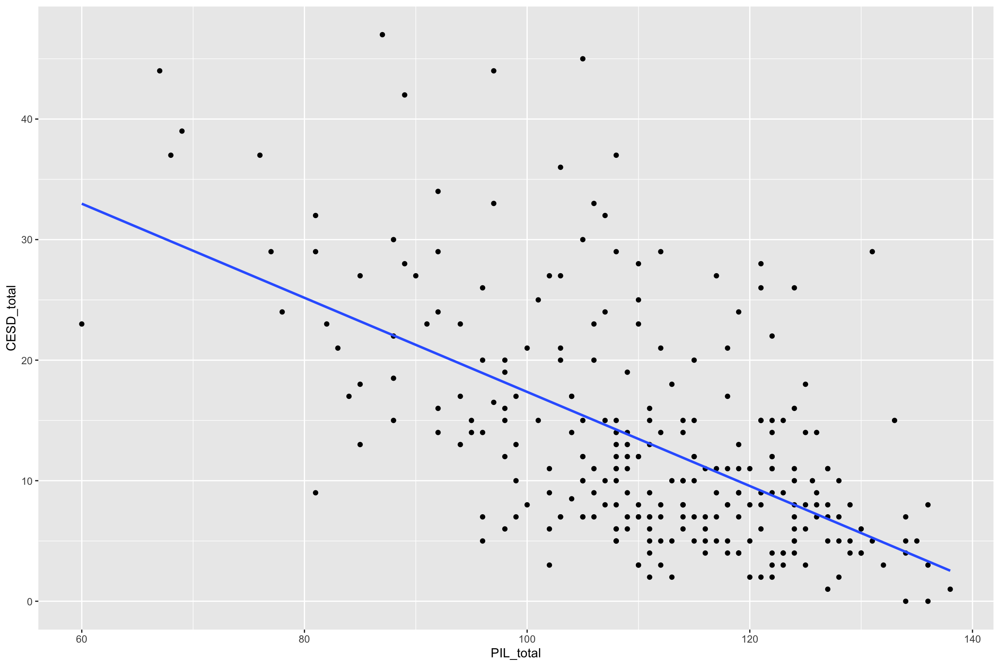lm() in R
The Relation Between Correlation and Regression
\[\hat{r} = \frac{covariance_{xy}}{s_x * s_y}\]
\[\hat{\beta_x} = \frac{\hat{r} * s_x * s_y}{s_x} = r * \frac{s_y}{s_x}\]
\[\hat{\beta_0} = \bar{y} - \hat{\beta_x}\]
lm() in R
How would we interpret \(b_0\)?
# A tibble: 2 × 5 term estimate std.error statistic p.value <chr> <dbl> <dbl> <dbl> <dbl> 1 (Intercept) 56.4 3.75 15.0 2.43e-37 2 PIL_total -0.390 0.0336 -11.6 1.95e-25
lm() in R
How would we interpret \(b_1\)?
# A tibble: 2 × 5 term estimate std.error statistic p.value <chr> <dbl> <dbl> <dbl> <dbl> 1 (Intercept) 56.4 3.75 15.0 2.43e-37 2 PIL_total -0.390 0.0336 -11.6 1.95e-25
lm() in R
\[\hat{CESD_{total}} = 56 + (-.39)*PIL_{total}\]

lm() in R
\[ \hat{CESD_{total}} = 56 + (-.39)*60\]
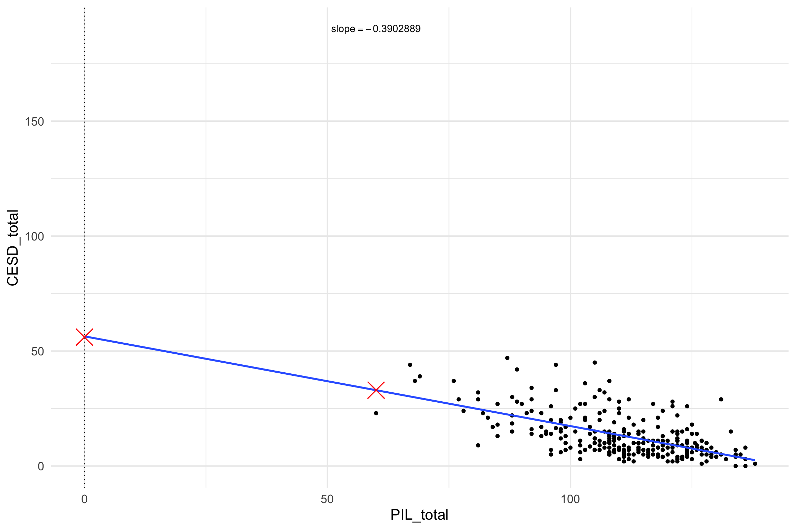Predictions
predict(object, newdata)object = model
newdata = values to predict
Residuals, Fitted Values, and Model Fit
- If we want to make inferences about the regression parameter estimates, then we also need an estimate of their variability
- We also need to know how well are data fits the linear model
SS Unexplained (Sums of Squares Error)
\[residual = y - \hat{y} = y - (x*\hat{\beta_x} + \hat{\beta_0})\]
\[SS_{error} = \sum_{i=1}^n{(y_i - \hat{y_i})^2} = \sum_{i=1}^n{residuals^2}\]
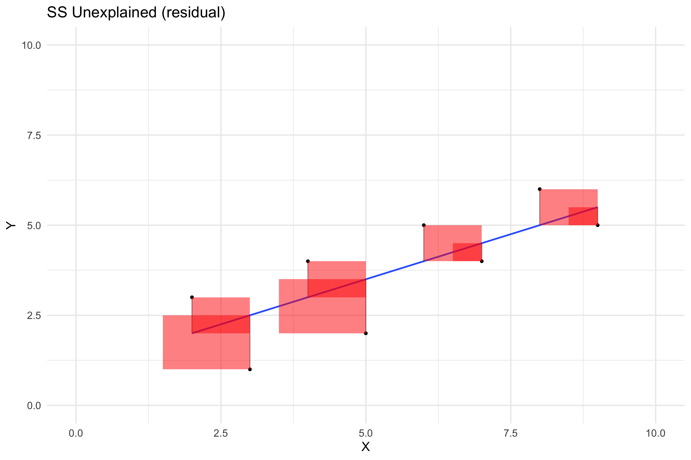SS Total (Sums of Squares Total)
Squared differences between the observed dependent variable and its mean.
\[SS_{total} = \sum{(Y_i - \bar{Y})^2}\]
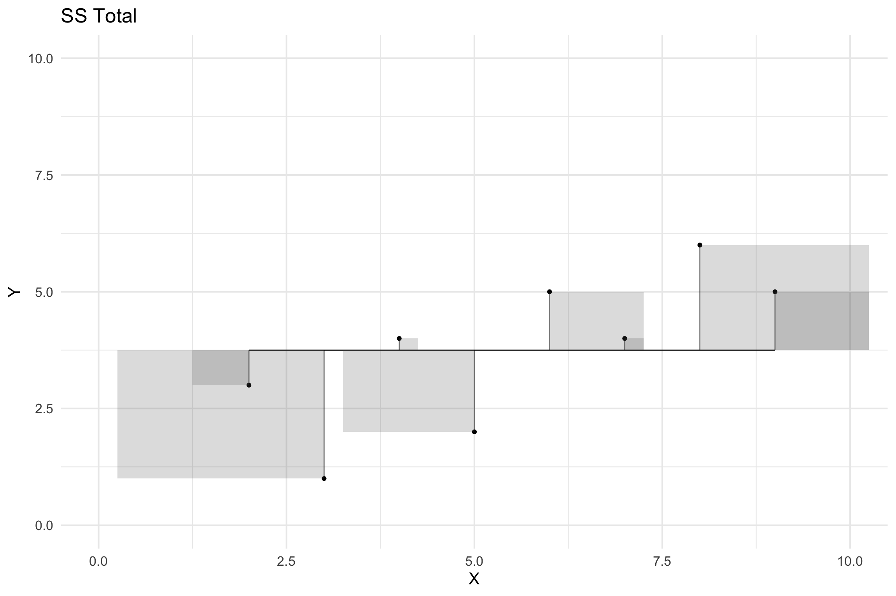SS Explained (Sums of Squares Regression)
The sum of the differences between the predicted value and the mean of the dependent variable
\[SS_{Explained} = \sum (\hat{Y_i} - \bar{Y})^2\]
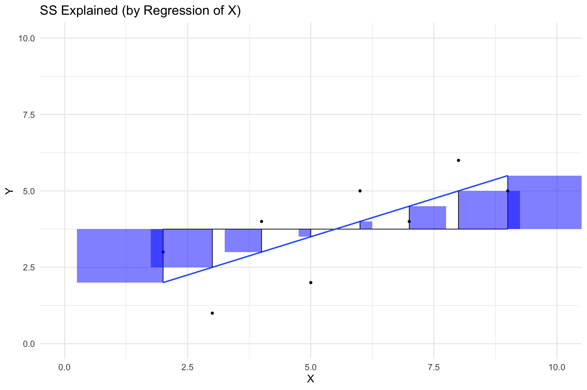All Together
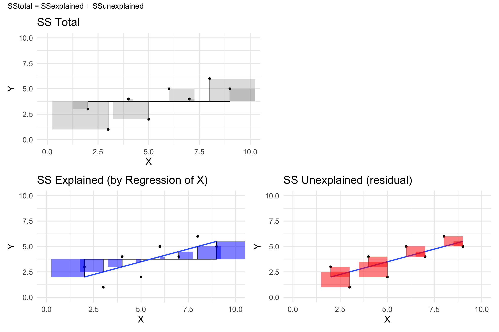broom Regression
- tidy(): coefficient table
- glance(): model summary
- augment(): adds information about each observation
Regression: NHST
\[H_0\colon \ \beta_1=0\] \[H_1\colon \ \beta_1\ne0\]
\[\begin{array}{c} t_{N - p} = \frac{\hat{\beta} - \beta_{expected}}{SE_{\hat{\beta}}}\\ t_{N - p} = \frac{\hat{\beta} - 0}{SE_{\hat{\beta}}}\\ t_{N - p} = \frac{\hat{\beta} }{SE_{\hat{\beta}}} \end{array}\]
| term | estimate | std.error | statistic | p.value |
|---|---|---|---|---|
| (Intercept) | 56.3955372 | 3.7525824 | 15.02846 | 0 |
| PIL_total | -0.3902889 | 0.0336426 | -11.60104 | 0 |
Calculate Standard Error
\[MS_{error} = \frac{SS_{error}}{df} = \frac{\sum_{i=1}^n{(y_i - \hat{y_i})^2} }{N - p}\]
\[ SE_{model} = \sqrt{MS_{error}} \]
\[SE_{\hat{\beta}_x} = \frac{SE_{model}}{\sqrt{{\sum{(x_i - \bar{x})^2}}}}\]
95% CIs
\[b_1 \pm t^\ast (SE_{b_1})\]
| term | estimate | std.error | statistic | p.value | conf.low | conf.high |
|---|---|---|---|---|---|---|
| (Intercept) | 56.3955372 | 3.7525824 | 15.02846 | 0 | 49.0068665 | 63.7842079 |
| PIL_total | -0.3902889 | 0.0336426 | -11.60104 | 0 | -0.4565296 | -0.3240481 |
Getting Residuals and Predicted Values
| CESD_total | PIL_total | .fitted | .resid | .hat | .sigma | .cooksd | .std.resid |
|---|---|---|---|---|---|---|---|
| 28 | 121 | 9.170584 | 18.829416 | 0.0057970 | 7.602150 | 0.0176455 | 2.4601796 |
| 37 | 76 | 26.733583 | 10.266417 | 0.0268288 | 7.663762 | 0.0253376 | 1.3557879 |
| 20 | 98 | 18.147228 | 1.852772 | 0.0068267 | 7.689629 | 0.0002016 | 0.2422016 |
| 15 | 122 | 8.780295 | 6.219705 | 0.0062133 | 7.680888 | 0.0020653 | 0.8128131 |
| 7 | 99 | 17.756939 | -10.756939 | 0.0063593 | 7.661748 | 0.0063246 | -1.4058582 |
| 7 | 134 | 4.096829 | 2.903171 | 0.0142050 | 7.688375 | 0.0010455 | 0.3809315 |
Model Fit
| r.squared | adj.r.squared | sigma | statistic | p.value | df | logLik | AIC | BIC | deviance | df.residual | nobs |
|---|---|---|---|---|---|---|---|---|---|---|---|
| 0.3368106 | 0.334308 | 7.675957 | 134.5842 | 0 | 1 | -922.0236 | 1850.047 | 1860.809 | 15613.88 | 265 | 267 |
Call:
lm(formula = CESD_total ~ PIL_total, data = master)
Residuals:
Min 1Q Median 3Q Max
-15.782 -5.366 -1.512 3.256 29.585
Coefficients:
Estimate Std. Error t value Pr(>|t|)
(Intercept) 56.39554 3.75258 15.03 <2e-16 ***
PIL_total -0.39029 0.03364 -11.60 <2e-16 ***
---
Signif. codes: 0 '***' 0.001 '**' 0.01 '*' 0.05 '.' 0.1 ' ' 1
Residual standard error: 7.676 on 265 degrees of freedom
Multiple R-squared: 0.3368, Adjusted R-squared: 0.3343
F-statistic: 134.6 on 1 and 265 DF, p-value: < 2.2e-16Fitted line with 95% CIs
# A tibble: 267 × 11
CESD_total PIL_total .fitted .lower .upper .se.fit .resid .hat .sigma
<dbl> <dbl> <dbl> <dbl> <dbl> <dbl> <dbl> <dbl> <dbl>
1 28 121 9.17 8.02 10.3 0.584 18.8 0.00580 7.60
2 37 76 26.7 24.3 29.2 1.26 10.3 0.0268 7.66
3 20 98 18.1 16.9 19.4 0.634 1.85 0.00683 7.69
4 15 122 8.78 7.59 9.97 0.605 6.22 0.00621 7.68
5 7 99 17.8 16.6 19.0 0.612 -10.8 0.00636 7.66
6 7 134 4.10 2.30 5.90 0.915 2.90 0.0142 7.69
7 27 102 16.6 15.5 17.7 0.553 10.4 0.00519 7.66
8 10 124 8.00 6.72 9.28 0.650 2.00 0.00716 7.69
9 9 126 7.22 5.85 8.59 0.698 1.78 0.00826 7.69
10 8 112 12.7 11.8 13.6 0.472 -4.68 0.00378 7.69
# ℹ 257 more rows
# ℹ 2 more variables: .cooksd <dbl>, .std.resid <dbl>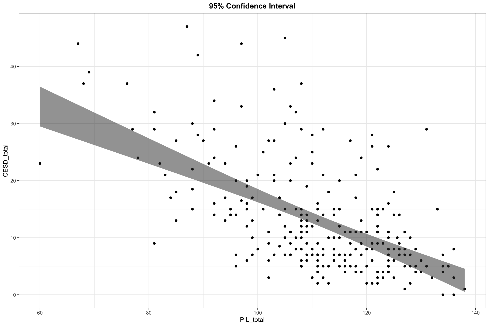
Regression Model
How useful are each of the individual predictors for my model?
- Use the coefficients and t-tests of the slopes
Is my overall model (i.e., the regression equation) useful at predicting the outcome variable?
- Use the model summary, F-test, and \(R^2\)
Overall Model Significance
Our overall model uses an F-test
However, we can think about the hypotheses for the overall test being:
\(H_0\): We cannot predict the dependent variable (over and above a model with only an intercept)
\(H_1\): We can predict the dependent variable ( over and above a model with only an intercept)
Generally, this form does not include two tailed tests because the math is squared, so it is impossible to get negative values in the statistical test
F-distribution
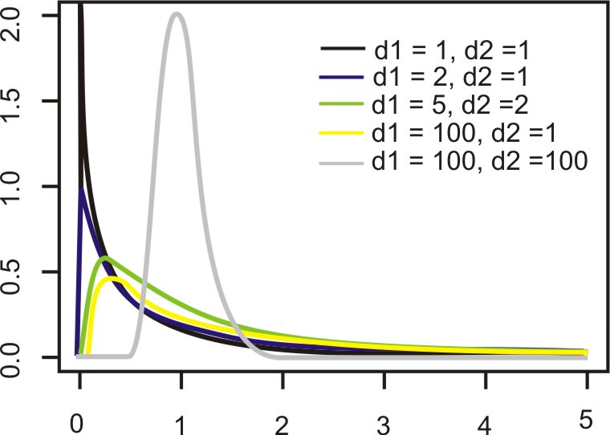F-Statistic, Explained Over Unexplained
- F-statistics use measures of variance, which are sums of squares divided by relevant degrees of freedom
\[F = \frac{SS_{Explained}/df1 (p-1)}{SS_{Unexplained}/df2(n-p)} = \frac{MS_{Explained}}{MS_{Unexplained}}\]
If explained = unexplained, then F=1
If explained > then, F >1
If explained < unexplained, F < 1
Calculating Mean Squares in R
Effect Size: \(R^2\)
Called PRE in book (not common)
Coefficient of determination
\[R^2 = 1 - \frac{SS_{\text{error}}}{SS_{\text{tot}}}\] \[R^2 = 1 - \frac{SS_{unexplained}}{SS_{Total}} = \frac{SS_{explained}}{SS_{Total}}\]
Standardized effect size
Amount of variance explained
- \(R^2\) of .4 means 40% of variance in the outcome variable (\(Y\)) can be explained by the predictor (\(X\))
Range: 0-1
\(R^2\)
| r.squared | adj.r.squared | sigma | statistic | p.value | df | logLik | AIC | BIC | deviance | df.residual | nobs |
|---|---|---|---|---|---|---|---|---|---|---|---|
| 0.3368106 | 0.334308 | 7.675957 | 134.5842 | 0 | 1 | -922.0236 | 1850.047 | 1860.809 | 15613.88 | 265 | 267 |
- \(R^2\) of .34 34% of variance in depressions scores is explained by meaning in life
\(R^2_{adj}\)
\[R^2_{adj}\]
\[R^2_{adj} = 1 - \frac{SS_{unexplained}}{SS_{Total}} = \frac{SS_{explained}(n-K)}{SS_{Total}(n-1)}\] where:
n = Sample size
K = # of predictors
Model conditions
Assumptions
Linearity: There is a linear relationship between the response and predictor variable
Constant Variance: The variability of the errors is equal for all values of the predictor variable
Normality: The errors follow a normal distribution.
Independence: The errors are independent from each other.
Assumptions: Linearity
- Can use a scatter plot between two variables but common to use residuals versus fits plot
❌ Violation: Nonlinear pattern
Assumptions: Normality of Errors
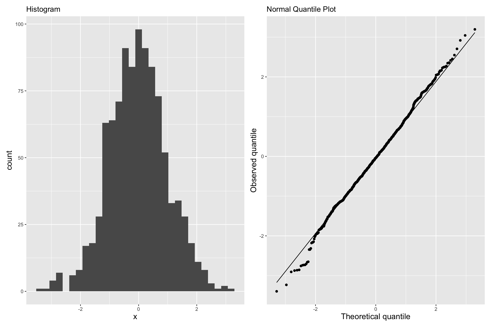✅:Points fall along a straight diagonal line on the normal quantile plot.
Assumptions: Equal Variances
- Constant error
- No correlation between predictor and residuals
- What are we looking for?
- Random variation above and below 0
- No patterns
- Width of the band of points is constant
Assumptions: Equal Variances
- Good
✅ There is no distinguishable pattern or structure. The residuals are randomly scattered.
Assumptions: Equal Variances
- Bad

✅ There is a distinguishable pattern or structure.
Assumption: Independence
- Let’s pretend this one is met 😀
- We can often check the independence assumption based on the context of the data and how the observations were collected.
easystats: Performance
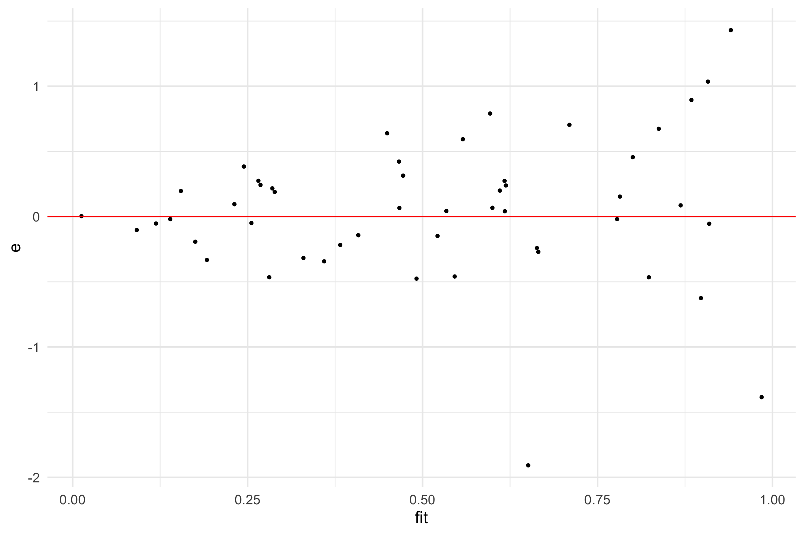Assumption violations: What can be done?
Non-linearity?
Non-linear regression
- Polynomials (e.g., \(x^2\))
Non-normality
- Transformations (e.g., log)
Heteroskedasticity
- Use robust SEs
Reporting
reportfunction ineasystatsis greatest thing ever!
We fitted a linear model (estimated using OLS) to predict CESD_total with
PIL_total (formula: CESD_total ~ PIL_total). The model explains a statistically
significant and substantial proportion of variance (R2 = 0.34, F(1, 265) =
134.58, p < .001, adj. R2 = 0.33). The model's intercept, corresponding to
PIL_total = 0, is at 56.40 (95% CI [49.01, 63.78], t(265) = 15.03, p < .001).
Within this model:
- The effect of PIL total is statistically significant and negative (beta =
-0.39, 95% CI [-0.46, -0.32], t(265) = -11.60, p < .001; Std. beta = -0.58, 95%
CI [-0.68, -0.48])
Standardized parameters were obtained by fitting the model on a standardized
version of the dataset. 95% Confidence Intervals (CIs) and p-values were
computed using a Wald t-distribution approximation.Your turn!
Dataset
Mental Health and Drug Use:
- CESD = depression measure
- PIL total = measure of meaning in life
- AUDIT total = measure of alcohol use
- DAST total = measure of drug usage
PSY 503: Foundations of Statistics in Psychology